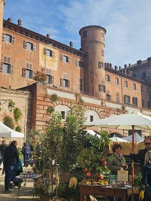
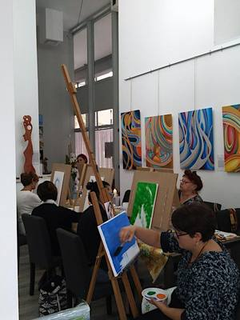
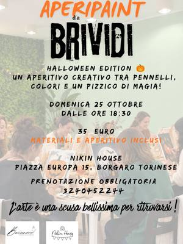

Workshop e corsi in provincia di Torino
Workshop, corsi e attività fuori città: da Pinerolo al Canavese, dalle valli alle colline intorno a Torino.
Cerca con tutti i filtri38 attività in arrivo · aggiornato il 21 ottobre 2026
 ven23ottAltroAperitivo d’autunno: intaglio della zuccavenerdì 23 ottobre, 18:00–21:00Pino Torinese (TO) · 15 €con Il Giardino di Rosero
ven23ottAltroAperitivo d’autunno: intaglio della zuccavenerdì 23 ottobre, 18:00–21:00Pino Torinese (TO) · 15 €con Il Giardino di Rosero
sab24ottPittura e scritturaAcquerello botanico: dipingi il crisantemosabato 24 ottobreMoncalieri (TO) · Gratiscon Curtis Sheeran per Fiorile sab24ottPer famigliePumpkin patch: intaglia e dipingi la zuccasabato 24 ottobrePino Torinese (TO)con Il Giardino di Rosero
sab24ottPer famigliePumpkin patch: intaglia e dipingi la zuccasabato 24 ottobrePino Torinese (TO)con Il Giardino di Rosero- sab24ottAltroFiori di carta: il banchetto al mercatosabato 24 ottobre, 09:00–12:00Ivrea (TO)con Stefano Fiorina per ZAC!
- sab24ottAltroLavori pubblici: cura del Movicentrosabato 24 ottobre, 09:30Ivrea (TO)con ZAC! con Part collettivo
 sab24ottPer famiglieOpen day in fattoria: animali per bambinisabato 24 ottobre, 10:00–12:00Pino Torinese (TO)con Agri Baby Parking La Fattoria
sab24ottPer famiglieOpen day in fattoria: animali per bambinisabato 24 ottobre, 10:00–12:00Pino Torinese (TO)con Agri Baby Parking La Fattoria sab24ottPer famiglieStorie in viaggio: letture e laboratoriosabato 24 ottobre, 10:30–12:00Chieri (TO) · Gratiscon Biblioteca Civica di Chieri (Festival dell’Accoglienza)
sab24ottPer famiglieStorie in viaggio: letture e laboratoriosabato 24 ottobre, 10:30–12:00Chieri (TO) · Gratiscon Biblioteca Civica di Chieri (Festival dell’Accoglienza) sab24ottPer famiglieMuseo del Crimine: indagine scientificasabato 24 ottobre, 10:30Settimo Torinese (TO) · Gratiscon MU-CH Museo della Chimica
sab24ottPer famiglieMuseo del Crimine: indagine scientificasabato 24 ottobre, 10:30Settimo Torinese (TO) · Gratiscon MU-CH Museo della Chimica sab24ottDegustazioniVini in miniera: visita e degustazionesabato 24 ottobre, 15:15–21:00Prali (TO) · 75 € · esauritocon L’Autin
sab24ottDegustazioniVini in miniera: visita e degustazionesabato 24 ottobre, 15:15–21:00Prali (TO) · 75 € · esauritocon L’Autin sab24ottTessileConnessione di fili: fiber art al telaiosabato 24 ottobre, 17:30–19:30Nichelino (TO) · 35 €con Nikolinka Nikolova per Galleria Tempio della Luce
sab24ottTessileConnessione di fili: fiber art al telaiosabato 24 ottobre, 17:30–19:30Nichelino (TO) · 35 €con Nikolinka Nikolova per Galleria Tempio della Luce dom25ottMovimentoTour in bici: Forte di Bard e vignetidomenica 25 ottobreSettimo Vittone (TO)con Baltea Bike Experience
dom25ottMovimentoTour in bici: Forte di Bard e vignetidomenica 25 ottobreSettimo Vittone (TO)con Baltea Bike Experience dom25ottPer famigliePumpkin patch: intaglia e dipingi la zuccadomenica 25 ottobrePino Torinese (TO)con Il Giardino di Rosero
dom25ottPer famigliePumpkin patch: intaglia e dipingi la zuccadomenica 25 ottobrePino Torinese (TO)con Il Giardino di Rosero dom25ottMovimentoEscursione: il cammino degli Invincibilidomenica 25 ottobre, 08:30Luserna San Giovanni (TO) · 20 €con Tassobarbasso, guide ambientali
dom25ottMovimentoEscursione: il cammino degli Invincibilidomenica 25 ottobre, 08:30Luserna San Giovanni (TO) · 20 €con Tassobarbasso, guide ambientali- dom25ottAltroLa spirale che riconnette: laboratoriodomenica 25 ottobre, 09:30–18:30Chiaverano (TO)con Collettivo Le Ife per ZAC!
 dom25ottGiochiGioco di ruolo dal vivo: caccia al killerdomenica 25 ottobre, 10:00–18:00Chivasso (TO) · Gratiscon Revelsh Blind Beholders
dom25ottGiochiGioco di ruolo dal vivo: caccia al killerdomenica 25 ottobre, 10:00–18:00Chivasso (TO) · Gratiscon Revelsh Blind Beholders dom25ottPer famiglieDomenica mostruosa: Halloween per bambinidomenica 25 ottobre, 10:00–14:00Borgaro Torinese (TO) · 15 €con Nikin House
dom25ottPer famiglieDomenica mostruosa: Halloween per bambinidomenica 25 ottobre, 10:00–14:00Borgaro Torinese (TO) · 15 €con Nikin House- dom25ottTessileCucito per negati: punti base e orlidomenica 25 ottobre, 10:00Rivarolo Canavese (TO) · 30 €con UnciPazzo con Eppi Lab

dom25ottPittura e scritturaRitratto al buio: pittura e arteterapiadomenica 25 ottobre, 15:30–19:30Nichelino (TO) · 55 €con Marilisa Serra per Galleria Tempio della Luce
dom25ottPittura e scritturaAperipaint da brividi: pittura e aperitivodomenica 25 ottobre, 18:30Borgaro Torinese (TO) · 35 €con Nikin House ven30ottPittura e scritturaMagico mondo dei mandala: su telavenerdì 30 ottobre, 17:30–19:30Nichelino (TO) · 35 €con Nikolinka Nikolova per Galleria Tempio della Luce
ven30ottPittura e scritturaMagico mondo dei mandala: su telavenerdì 30 ottobre, 17:30–19:30Nichelino (TO) · 35 €con Nikolinka Nikolova per Galleria Tempio della Luce sab31ottMovimentoTour in bici: la Valchiusellasabato 31 ottobreValchiusella (TO)con Baltea Bike Experience
sab31ottMovimentoTour in bici: la Valchiusellasabato 31 ottobreValchiusella (TO)con Baltea Bike Experience sab31ottAltroWorkshop di saponificazione: il tuo saponesabato 31 ottobre, 09:00–13:00Pinerolo (TO) · 50 €con Courtesia per Nodo Concept Space
sab31ottAltroWorkshop di saponificazione: il tuo saponesabato 31 ottobre, 09:00–13:00Pinerolo (TO) · 50 €con Courtesia per Nodo Concept Space sab31ottCeramicaLaboratorio di ceramica: set da colazionesabato 31 ottobre, 14:00–18:00Pinerolo (TO) · 55 €con Pauta Pot per 39/ Tramediffuse
sab31ottCeramicaLaboratorio di ceramica: set da colazionesabato 31 ottobre, 14:00–18:00Pinerolo (TO) · 55 €con Pauta Pot per 39/ Tramediffuse sab31ottPer famiglieHalloween Cake & Chill: torte per bambinisabato 31 ottobre, 15:30–17:30Borgaro Torinese (TO)con Limaco’s Lab
sab31ottPer famiglieHalloween Cake & Chill: torte per bambinisabato 31 ottobre, 15:30–17:30Borgaro Torinese (TO)con Limaco’s Lab sab31ottPittura e scritturaLa via dell’acqua: laboratorio di acquerellosabato 31 ottobre, 17:30–19:30Nichelino (TO) · 35 €con Fernanda Prudenzano per Galleria Tempio della Luce
sab31ottPittura e scritturaLa via dell’acqua: laboratorio di acquerellosabato 31 ottobre, 17:30–19:30Nichelino (TO) · 35 €con Fernanda Prudenzano per Galleria Tempio della Luce sab31ottAltroHalloween Night: intaglio della zuccasabato 31 ottobre, 18:00–21:00Pino Torinese (TO) · 15 €con Il Giardino di Rosero
sab31ottAltroHalloween Night: intaglio della zuccasabato 31 ottobre, 18:00–21:00Pino Torinese (TO) · 15 €con Il Giardino di Rosero dom1novPer famiglieFacciamo un libro: albo illustratodomenica 1 novembre, 10:00–12:00Grugliasco (TO) · Gratiscon Gloria Tundo per Leumann Hub
dom1novPer famiglieFacciamo un libro: albo illustratodomenica 1 novembre, 10:00–12:00Grugliasco (TO) · Gratiscon Gloria Tundo per Leumann Hub dal4novPittura e scritturaIl Filo di Arianna: arteterapia per donneda mercoledì 4 novembre, ogni mercoledì, 18:30Borgaro Torinese (TO)con Nikin House
dal4novPittura e scritturaIl Filo di Arianna: arteterapia per donneda mercoledì 4 novembre, ogni mercoledì, 18:30Borgaro Torinese (TO)con Nikin House- ven6novDegustazioniDegustazione: i vini di Stefano Rossottovenerdì 6 novembreIvrea (TO) · 20 €con ZAC! con Vini Stefano Rossotto
 dom8novAltroTessere la storia: intreccio fotograficodomenica 8 novembre, 14:30–17:30Ivrea (TO) · da 15 €con Anastasia Moro per Open Art House
dom8novAltroTessere la storia: intreccio fotograficodomenica 8 novembre, 14:30–17:30Ivrea (TO) · da 15 €con Anastasia Moro per Open Art House sab14novPer famiglieNanù Lab Kids: borsa della spesa dipintasabato 14 novembre, 10:00–11:30Pinerolo (TO) · 20 €con Nanù Lab Kids con 123 Stella
sab14novPer famiglieNanù Lab Kids: borsa della spesa dipintasabato 14 novembre, 10:00–11:30Pinerolo (TO) · 20 €con Nanù Lab Kids con 123 Stella dom15novMovimentoPasseggiata e polenta in collinadomenica 15 novembre, 10:30–16:00San Mauro Torinese (TO) · da 22 €con Mulino Sambuy OdV
dom15novMovimentoPasseggiata e polenta in collinadomenica 15 novembre, 10:30–16:00San Mauro Torinese (TO) · da 22 €con Mulino Sambuy OdV sab28novPer famiglieNanù Lab Kids: la porta dell’elfosabato 28 novembre, 10:00–11:30Pinerolo (TO) · 20 €con Nanù Lab Kids con 123 Stella
sab28novPer famiglieNanù Lab Kids: la porta dell’elfosabato 28 novembre, 10:00–11:30Pinerolo (TO) · 20 €con Nanù Lab Kids con 123 Stella- ven4dicDegustazioniDegustazione: i vini di La Sourcevenerdì 4 dicembreIvrea (TO) · 20 €con ZAC! con La Source Winefarm
 dal5dicMovimentoSnow Latin Week: salsa e bachatada sabato 5 dicembre a martedì 8 dicembre, 12:00–17:00Bardonecchia (TO) · da 299 €con Like This Agency
dal5dicMovimentoSnow Latin Week: salsa e bachatada sabato 5 dicembre a martedì 8 dicembre, 12:00–17:00Bardonecchia (TO) · da 299 €con Like This Agency ognia sceltaCucinaFabbrica della Felicità: cioccolato LeoneData a sceltaCollegno (TO) · 35 €con Leone 1857
ognia sceltaCucinaFabbrica della Felicità: cioccolato LeoneData a sceltaCollegno (TO) · 35 €con Leone 1857 ognia sceltaPer famiglieVillaggio della Zucca: dipingi la tua zuccaData a sceltaFavria (TO) · 15 €con Il Villaggio della Zucca
ognia sceltaPer famiglieVillaggio della Zucca: dipingi la tua zuccaData a sceltaFavria (TO) · 15 €con Il Villaggio della Zucca ognisabato e domenicaDegustazioniMartini Cocktail Experience: mixologyOgni sabato e domenica, 15:30Chieri (TO) · da 39 €con Casa Martini
ognisabato e domenicaDegustazioniMartini Cocktail Experience: mixologyOgni sabato e domenica, 15:30Chieri (TO) · da 39 €con Casa Martini